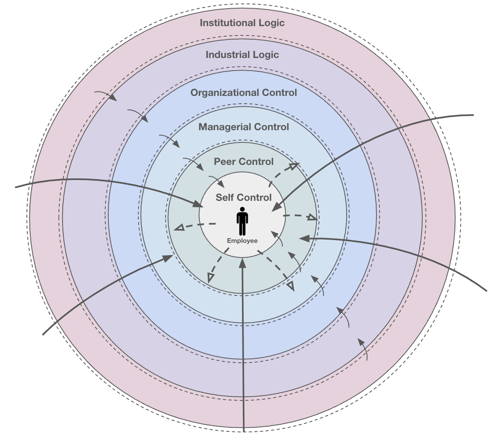

Background
9am to 9pm, 6 days a week.
For millions of engineers in the Chinese tech industry, this isn't a crisis. It's just the schedule. Fueled by involution (内卷), a zero-sum competition where excessive effort becomes necessary just to maintain your position, the 996 culture has become so normalized that many employees describe it as simply "the environment."
On paper, these hours are a violation of national labor law in China and are never officially mandated. In reality, 996 is an inescapable social contract that everyone signs with their silence.
Growing up with family roots in mainland China, I'd heard about 996 my whole life. It wasn't alarming to me. That changed when my Finnish advisor, Dr. Mari Kira, encountered this phenomenon and was genuinely shocked. Her reaction made me see it through fresh eyes and ask a question I'd never thought to ask: why do people actually comply?
The Research Question
Not just "they have to" — but why.
The question wasn't whether 996 was harmful — it clearly was. The deeper puzzle was how a practice that lacks any official enforcement still manages to command near-universal compliance. I wanted to understand the invisible factors that keep employees anchored to a system that is technically illegal yet feels entirely mandatory.
Research Question — Study 1
Through what multi-level mechanisms is extreme compliance sustained as a norm within the Chinese technology sector?
- How does micro-level psychological processes interact with macro-level organizational and cultural influences to shape employee experiences and responses?
Study 1 Methods · Chinese Tech Industry
Secondary analysis. 16 engineers. One original framework.
Study 1 draws on an existing dataset. Rather than collecting new data, I focused my contribution on rigorous analysis and original theoretical development.
The Data Source
Secondary analysis
Secondary dataset from Shen (2022) — semi-structured interviews with 16 Chinese software and algorithm engineers about their workplace schedules, cultures, and perspectives on 996, conducted in Chinese Mandarin. To ensure analytical consistency and accessibility for non-Chinese speakers on my team, I translated all 16 transcripts into English while preserving the cultural nuances of the original responses.
Deep Transcript Immersion
Interpretative approach
Before any formal coding, I read through all transcripts multiple times. This helped me built an intuitive understanding of the data and identifying early patterns without imposing any structure.
Thematic Analysis in NVivo
Core analytical method
Using NVivo, I coded themes iteratively across all transcripts, refining and reorganizing categories as patterns emerged, without a predetermined framework. The goal was to let the data speak rather than fit it into existing theory.
RA Verification
Analytical triangulation
At the later stages, I brought in research assistants to independently code the same transcripts, strengthening reliability through inter-rater comparison and discussion. I, a Hong Kong-born Chinese researcher, was complemented by two Caucasian American research assistants through the analysis process. The diverse cultural backgrounds of the team provided an essential external perspective, helping to safeguard the analysis against egocentric or cultural biases.
Ecological Model of Workplace Control
Theoretical contribution
Six nested layers of control emerged. Organized into an original theoretical framework explaining how micro-level psychological pressures and macro-level cultural forces interact to sustain extreme compliance.
Study 1 Findings · Chinese Tech Industry
Six nested layers of control.
While I expected control to exist, what surprised me was its precision — a clearly mappable structure spanning from the deeply personal all the way to the societal, with each layer reinforcing the next.

The model works like a set of nested rings. At the center is the individual employee, the only layer where personal agency theoretically exists. But that agency is hemmed in on all sides. Each outer ring represents a broader source of pressure: peers, managers, the organization, the industry, and finally society itself. The further out you go, the harder it is to see and the harder it is to escape.
What makes the system self-sustaining is that resistance at any level triggers consequences from the layers above it. Try to leave at 6pm and your manager loads you with more work. Push back on your workload and you fall below your peer group's benchmark. The outer rings don't need to enforce compliance directly. They just make noncompliance too costly to sustain.
Each layer has a job. Breaking it down
Click any layer to expand the full description and subthemes.
Employees reframe extreme conditions as personal choices rather than imposed demands. Financial necessity, comparisons to peers in worse situations, and a gradual erosion of confidence quietly reinforce this rationalization until compliance feels voluntary.
No one explicitly tells you to stay late. But when every colleague is still at their desk at 10pm, leaving feels like a statement. Compliance spreads through observation rather than instruction, while information hoarding keeps peers in quiet competition.
Unrealistic workloads are assigned without room for negotiation. Feedback flows downward but rarely upward, leaving employees with no legitimate channel to raise concerns. Time gets absorbed by redundant meetings, making the hours even harder to manage.
Performance systems like the 2-7-1 forced ranking turn colleagues into competitors and make extreme hours a baseline expectation. The ideal employee is not the most effective one but the most visibly dedicated one.
The industry runs on the belief that falling behind is permanent. The so-called "35-year-old curse" makes engineers feel disposable past a certain age, while constant pressure to upskill leaves little room to slow down.
Societal normalization so complete that even acts of resistance have been absorbed into the culture. The boundary between work and life has not just blurred but largely disappeared.
Original Theoretical Contribution
Ecological Model of Workplace Control
The six control layers don't operate independently. They form a nested system where each outer layer presses inward, and each inner layer quietly reinforces the ones surrounding it. The result is a web of compliance that touches every part of an employee's life at once, with no single layer responsible and no obvious place to push back.
Impact of 996 culture
Chronic burnout doesn't push employees out. It pulls them deeper in. Exhaustion becomes evidence of working hard enough, not a signal to stop.
Romantic relationships erode as work takes over as the primary organizer of daily life, leaving little room for personal identity outside of professional output.
Over time, employees stop registering the conditions as extreme. What once caused visible distress becomes routine. From initial breakdowns to just getting used to it.
Study 2 Methods · U.S. Tech Industry
Follow up research. My design, start to finish.
While Study 1 looked at the institutionalized control in Chinese tech, I designed and led Study 2 to see how those same dynamics play out in a more individualistic context. I managed the entire process from building the protocol to conducting all 11 interviews myself. I wanted to find out if similar pressures exist in the U.S. and how they shift when the environment is built on autonomy rather than explicit coercion.
Research Question · Study 2
Do the control mechanisms sustaining extreme compliance in Chinese tech operate in the U.S. workplace?
- How does an autonomy-oriented, individualistic work culture shape the way those mechanisms function?
Research Design
Independent design
I built the interview protocol to mirror Study 1's structure — covering workplace experiences, motivation, autonomy, and perspectives on 996 and forced ranking — with an added section specific to the U.S. context.
Participant Recruitment
N = 11
Recruited 11 engineers and developers working at U.S. tech companies, selecting participants across experience levels and company sizes for methodological range.
Interviews Conducted
All interviews self-conducted
All 11 semi-structured interviews conducted by me, creating a consistent experience across participants and allowing me to probe nuances in real time.
Thematic Analysis
NVivo · comparative design
Applied the same interpretative thematic analysis approach as Study 1 in NVivo, enabling direct cross-cultural comparison of findings across both datasets.
Study 2 Findings · U.S. Tech Industry
Same pressure. Completely different response.
The U.S. tech industry runs on a "Do What You Love" ethos, where passion rather than obligation is supposed to drive performance. In practice, this produced a fundamentally different relationship with work demands.
-
Autonomous motivation dominated
U.S. engineers worked hard because they wanted to. Intrinsic interest and personal goals drove their output, not fear of falling behind or financial pressure.
-
Control was negotiable
Overtime expectations existed but were not systematically enforced. Employees could push back, set limits, and protect personal time without meaningful consequence.
-
Peer relationships were collaborative, not competitive
Where Chinese engineers guarded information and distrusted colleagues, U.S. engineers described open, supportive team dynamics where knowledge was shared rather than hoarded.
-
Age was an asset
The "35-year-old curse" had no equivalent. Seniority and expertise were valued, and career precarity only emerged much later, in employees' 50s and 60s.
The Contrast
Same phenomenon. Two entirely different lived realities.
Across every dimension — motivation, control, relationships, and agency — the two cultures produced mirror-opposite outcomes.
China · on 996
"Voluntary labor."
Internalized. Normalized. Accepted as inevitable.
United States · on 996
"Feels like slavery."
Rejected. Resisted. Actively refused.
The Conclusion
Architecture, not attitude.
The same practice. Two entirely different lived realities. What 996 reveals is not just a cultural difference in work ethic. It is a difference in how control gets built into a system. In China, compliance is so deeply embedded across every layer that it no longer feels like compliance. In the U.S., the same pressure exists but remains negotiable. The gap between the two is not attitude. It is architecture.
What's Next
This research is still evolving.
This project isn't finished — and that's intentional.
-
Study 1 — preparing for publication. The Ecological Model of Workplace Control and Chinese tech findings are being written up for academic publication, under the advisement of Dr. Mari Kira.
-
Study 2 — becoming its own investigation. What began as a cross-cultural comparison is being redesigned as a standalone study examining how the "Do What You Love" ethos shapes the way U.S. engineers perceive work, define success, and navigate workplace expectations. The goal is to understand what happens when passion becomes a professional obligation.